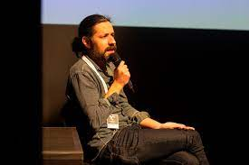

Bruno Aleixo
Origem: Wikipédia, a enciclopédia livre.
Indice

- O programa do Aleixo
- Rubricas
- Amigos e familiares
- Amigos
- Familiares
- Spin-offs
- Guionistas
- Aleixo FM
- Aleixo PSI
- O filme do Bruno Aleixo
- Notas e referências
- Ligações externas
Bruno Aleixo é uma personagem de animação digital português, apresentador do talk show O Programa do Aleixo.
Bruno Constantino Ribeiro Aleixo é um indivíduo com parecença a uma mistura ambígua entre um urso de peluche e um cão, sendo de facto, um Ewok , apesar de ter sugerido tratar-se de “um Yorkshire terrier com sotaque de aldeias serranas do distrito de Coimbra ”. Quando foi criado O Programa do Aleixo, visto que este se destinava a transmissão televisiva, a aparência de Aleixo foi mudada, já que os Ewoks são propriedade da Lucasfilm. Apesar de ser natural de Coimbra, tem ascendência brasileira.
Ficou conhecido por uma série de vídeos publicados na Internet, intitulados Os Conselhos Que Vos Deixo, e pela conversa com Nuno Markl para a rubrica Os Incorrigíveis.
O Programa do Aleixo
A 9 de novembro de 20082, Bruno Aleixo estreou o seu programa no canal SIC Radical onde apresenta - ao lado de um busto de Napoleão chamado "Busto" - diversas rubricas, que formam, segundo o próprio, um talk show. O programa é realizado no seu apartamento e conta com uma temporada composta por sete episódios. Em 2012, a segunda temporada de O Programa do Aleixo estreou-se na SIC Radical, num formato muito semelhante ao da primeira temporada.
As vozes dos personagens são feitas por João Moreira e Pedro Santo. As animações são de João Pombeiro.
Rubricas
Ao longo dos vários programas surgem várias rubricas, tais como:
- "Revista de Imprensa": neste segmento, Bruno Aleixo analisa várias notícias do jornal local "Gazeta de Coimbra", pedindo a opinião do co-apresentador, Busto; como característica recorrente, as notícias são de importância relativa.
- "Um Amigo Meu": Aleixo, ao longo dos episódios, vai apresentando os seus amigos peculiares, que vão surgindo em diversas situações.
- "Opinião Civil": sátira aos programas e fóruns de opinião pública.
- "O Busto Apresenta um Mito Urbano-Rural (e eu logo digo se é verdade ou não)": nesta rubrica, Busto selecciona um mito popular, sobre o qual Bruno Aleixo diz se é verdade ou mentira; no genérico desta rubrica surge um OVNI que sequestra uma criatura similar ao Monstro de Loch Ness.
- "Entrevista": entrevista a uma figura pública, no estilo de conversa entre amigos, no qual Aleixo aborda assuntos relacionados com os entrevistados, deixando-os por vezes embaraçados com situações da vida pessoal e com "jogos" em jeito de charadas; a primeira temporada conta com os entrevistados Paulo Furtado, José Luís Peixoto, Fernando Alvim, Rui Pedro Tendinha, Miguel Guilherme, Fernando Martins e Manuel João Vieira.
- "Mister Cimba": momento comercial do programa assumido pela empresa fictícia Mister Cimba, que patrocina a rubrica "Entrevista", uma empresa de Viagens & Utilidades, sátira às empresas de excursões e televendas.
- "Jogo de Casa": momento "didáctico" do programa, em que uma pessoa "lá de casa" participa num passatempo diferente em cada semana; alguns jogos são de solução duvidosa; os prémios são peculiares.
- "Animatógrapho": nesta rubrica, Bruno mostra um trailer de um filme, ao mesmo tempo que este e Busto o comentam; a grande parte dos filmes são dos meados do século XX, com cenários patéticos, enredo idiota e montagens anedóticas.
Todos os episódios terminam com uma versão ao piano de "grandes êxitos" nacionais e internacionais, sem qualquer tipo de critério, acompanhados pelas vozes do dueto composto por Bruno Aleixo e Busto.
Amigos e familiares
Ao longo dos episódios, vão surgindo vários amigos de Aleixo e familiares de várias personagens, sendo os mais relevantes os seguintes:
Amigos
- Busto: co-apresentador do Programa do Aleixo; personificado por um busto de Napoleão Bonaparte, Busto é natural de Condeixa e licenciado em Letras.
- Renato Alexandre: personificado por uma personagem do filme Creature from the Black Lagoon; Renato considera-se dotado para música techno e música carnavalesca. É natural de Óbidos e estudante de Engenharia na Universidade de Coimbra. Durante uma época esteve na República Checa através do programa Erasmus. Ingénuo e amante de diversão estudantil, supõe-se que é ex-toxicodependente, uma vez que toma metadona regularmente.
- Homem do Bussaco: personificado por uma figura de ação do Bigfoot da série The Six Million Dollar Man. Natural e residente na Serra do Buçaco, Mealhada, é amigo de longa data de Bruno, desde a altura em que ambos faziam recruta no Centro de Instrução de Operações Especiais em Lamego. Tem como principal característica o seu temperamento agressivo e a sua voz/dicção de difícil percepção, sendo necessárias legendas para efeitos de acessibilidade.
- Dr. Ribeiro: médico que é invisível desde os 34 anos e que trabalha nos Hospitais da Universidade de Coimbra; tem um ligeiro problema com as bebidas alcoólicas; ocasionalmente, quando embriagado, anda nu (só se dá conta por se ver uma garrafa a flutuar no ar).
- Nelson Miguel Rodrigues Pinto: porteiro do prédio onde habita Bruno Aleixo, natural da Figueira da Foz; nota-se que é inocente e modesto a nível de QI.
- Seu Jaca: amigo de longa data de Bruno. A sua cabeça é uma jaca, fruto brasileiro. Seu Jaca é do Rio de Janeiro, Brasil, tendo lá um hotel. Em Aleixo no Brasil e em quase todas as idas ao Brasil de Bruno, ele encontra o Seu Jaca.
Familiares
- António "Toninho" Aleixo: irmão mais novo de Bruno. Representado muitas vezes na infância de Bruno, querendo brincar com Bruno que nunca quer brincar com ele.
- Primo do Busto: primo de Busto, é co-apresentador durante metade de um episódio do Programa do Aleixo por o seu primo ter ido ao médico; personificado por um busto de Beethoven; tem como característica principal ouvir mal (referência ao facto de Beethoven ter sido surdo) e ser repetitivo nas suas histórias, que começam sempre pelas palavras "Uma vez…".
- Pai do Busto: pai de Busto; personificado por um busto de Benjamin Franklin, o seu traço principal é não concordar com o Busto.
- Homem do Matogrosso: primo do Bussaco, vive no Brasil, no pantanal de Mato Grosso.
- Avó do Bruno: avó de Bruno Aleixo, vive em Cachoeira Paulista, São Paulo, Brasil (como mostrado no quinto episódio de Aleixo no Brasil), gosta muito do genro a quem dá muitas coisas e não cai nos esquemas do Bruno.
No dia 29 de junho de 2009, o programa volta a ir para o ar, em repetição, na SIC Radical. Em finais de 2009, foi publicado na Internet um teaser de um novo programa, intitulado Aleixo Turista, anunciado para 2010, constituído por 18 episódios, cada um sobre uma cidade portuguesa diferente.
Spin-offs
Como spin-offs do Programa do Aleixo produziram-se séries publicadas online como Aleixo no Hospital, Busto no Emprego, Aleixo no Brasil, Aleixo na Escola, Os Conselhos que te Deixo, Mister Cimba, 7 Artes, A Pandilha, entre outras sequelas. Em novembro de 2009 foram colocadas na grelha da SIC Radical as séries 7 Artes e A Pandilha, e em fevereiro de 2010 as séries Aleixo no Brasil e Busto no Emprego. O Homem do Bussaco ganhou espaço próprio numa rubrica do programa 5 Para a Meia-Noite, transmitido no canal RTP2, onde conta uma história sobre o tema da semana, chegando a ser substituído por Bruno Aleixo num dos episódios.
Guionistas
A personagem nasceu das mentes vibrantes de três rapazes que não queriam brincar com a actualidade, nem ter semelhanças com programas humorísticos de referência, como os Gato Fedorento, Os Contemporâneos ou Contra Informação. João Moreira, João Pombeiro e Pedro Santo têm perto de 30 anos, vivem entre Coimbra e Lisboa e, juntos, formam os GANA - Guionistas e Argumentistas Não-Alinhados.
Além destes, alguns episódios foram escritos em colaboração com Fernando Aguiar, Alexandro Santos e Bernardo Domingues.
Aleixo FM
Bruno Aleixo fez a sua estreia radiofónica a 2 de dezembro de 2009 com o início das emissões diárias de Aleixo FM, na estação de rádio Antena 3. O programa consiste em pequenos espaços de dois a três minutos apresentados por Bruno Aleixo e Busto, onde estes, de forma peculiar, discutem temas da actualidade e do dia-a-dia, e dão sugestões para os tempos livres. Frequentemente esta rubrica conta com outras personagens do imaginário GANA relacionadas com Bruno Aleixo, como Nelson, Renato ou Velhadas.
Após 104 emissões, o programa Aleixo FM terminou a 26 de Março de 2010. Aleixo FM regressou em setembro de 2015, desta vez numa base semanal, sendo transmitido às quartas-feiras na Antena 3. Posteriormente, em setembro de 2016, Bruno Aleixo estreou uma nova rubrica de rádio transmitida às segundas-feiras, em simultâneo com o programa das quartas feiras, a Aleixopédia. Apesar do programa das segundas-feiras manter o formato do Aleixo FM, a Aleixopédia é uma rubrica de tema único, música e cinema, nas primeira e segunda temporadas, respetivamente.
Aleixo PSI
Em outubro de 2016, Bruno Aleixo postou um vídeo no Facebook pessoal em que anunciava uma nova temporada do programa do Aleixo, o Aleixo PSI. Uma semana depois do anúncio, a SIC Radical confirmava o regresso de Bruno Aleixo à televisão portuguesa, escrevendo no seu site: "Um dos maiores fenómenos de sempre do humor português da SIC Radical regressa em 2017 com uma nova série original de episódios em estreia, produzida pela O Som e a Fúria.".
A 28 de abril de 2017, em horário nobre, estreou o primeiro episódio da série Aleixo PSI. A nova série trouxe um novo formato, desta vez incluindo uma história progressiva, ao estilo de uma novela e passou a incluir o uso de atores humanos na maioria do programa. Segundo o site da SIC Radical: "Por contingências da vida, Bruno Aleixo é judicialmente obrigado a fazer psicoterapia. Ao longo de seis sessões, e acompanhado pela sua relação especial com a verdade absoluta, levantar-se-á então o véu sobre várias áreas da sua vida (amigos, família, negócios, amores, etc.)."3 A série, num formato de 6 episódios terminou a 2 de junho de 2017.
O Filme do Bruno Aleixo
A 23 de janeiro de 2020 estreou em Portugal O Filme do Bruno Aleixo.4 A 2 de agosto de 2020 o filme foi adaptado numa minissérie de cinco episódios no canal SIC Radical.
Notas e referências
- https://visao.sapo.pt/visaose7e/tv/2017-04-28-aleixo-psi-no-diva-com-bruno-aleixo/
- «SIC Radical estreia "O Programa do Bruno Aleixo"». Telesatelite.net
- «Aleixo Psi». SIC. Consultado em 17 de dezembro de 2017
- «Já há trailer para "O Filme do Bruno Aleixo", que chega aos cinemas em janeiro.». Observador. 7 de outubro de 2019
Ligações externas